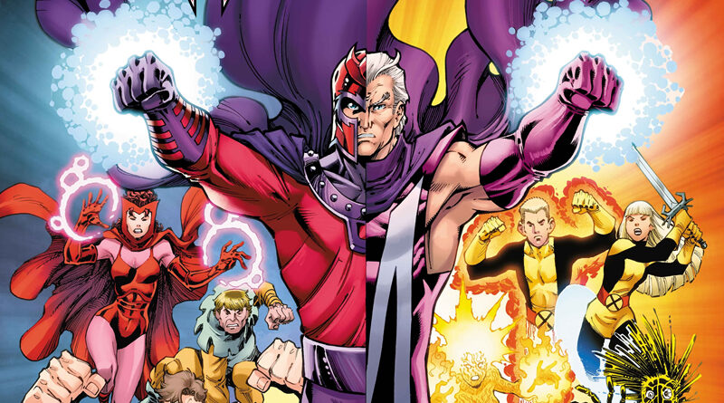
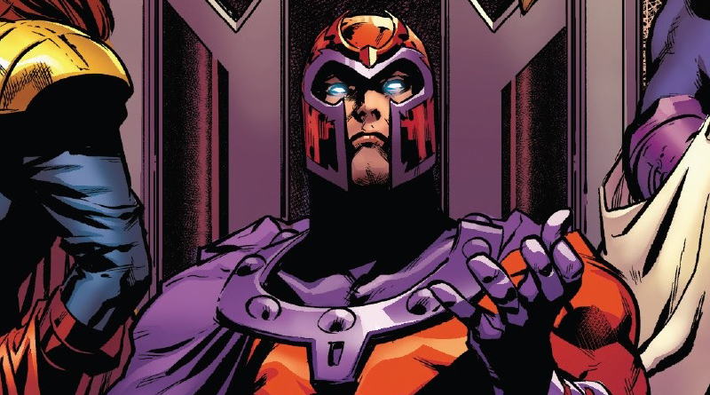
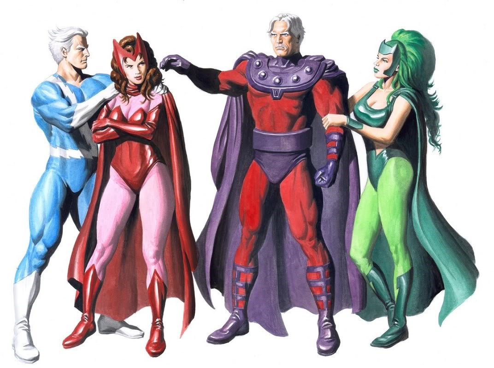
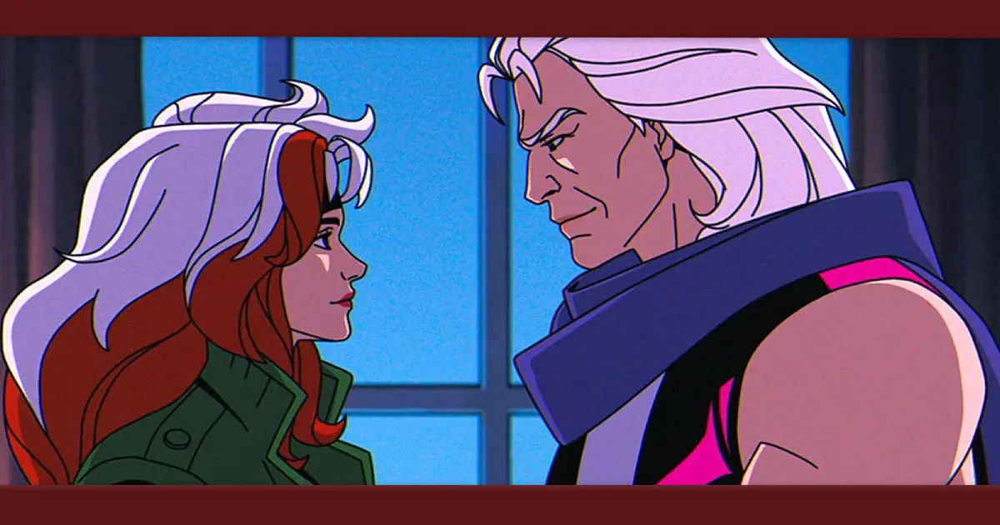

Erik Magnus Lehnsherr, mais conhecido como "Magneto" ou "Mestre do Magnitismo", ( Magnus para os mais
íntimos) é um dos personagens mais complexos e icônicos do 'Universo Marvel'. Criado por Stan Lee e Jack
Kirby, sua primeira aparição foi em "X-Men" #1, em setembro de 1963. Magneto é um mutante com a
incrível habilidade de controlar campos magnéticos, o que lhe confere um poder quase ilimitado sobre metais
e energia eletromagnética. Ele é frequentemente retratado como um vilão, um anti-herói e, em certas fases,
até um aliado relutante dos X-Men, representando a luta por direitos e sobrevivência dos mutantes de uma
forma mais radical e confrontadora do que a filosofia de coexistência pacífica de Charles Xavier.
A complexidade de sua personalidade e motivações o torna um dos personagens mais debatidos das HQ's,
levantando questões sobre justiça, vingança e o caminho para a paz em meio à opressão.
História do início ao fim
Origens e a tragédia do holocausto
O verdadeiro nome de Magneto é 'Max Eisenhardt'. Ele nasceu em uma família judaica na alemanha no final da
década de 1920. Sua infância foi marcada pela ascensão do nazismo e pelo terror do holocausto. Max e sua
família foram enviados para o campo de concentração de auschwitz, onde testemunhou a morte de seus entes
queridos e sofreu horrores indizíveis. Essa experiência traumática, que o transformou em um sobrevivente de
genocídio, moldou profundamente sua visão de mundo e sua desconfiança na humanidade. Ele viu em primeira mão
o que a intolerância pode fazer e jurou que os mutantes, uma minoria oprimida, nunca sofreriam o mesmo
destino que seu povo.

A amizade com Charles Xavier
Após a guerra, Max, agora conhecido como 'Erik Magnus Lehnsherr', tentou levar uma vida normal. Foi nessa
época que ele conheceu: Charles Xavier, um telepata brilhante e também mutante. Eles se tornaram grandes
amigos, compartilhando a visão de um futuro onde mutantes e humanos poderiam coexistir. No entanto, suas
filosofias divergiam fundamentalmente: Xavier acreditava na integração pacífica e na educação, enquanto
Magneto, endurecido por seu passado, defendia a supremacia mutante como a única forma de garantir a
sobrevivência de sua espécie, temendo que os humanos sempre se voltassem contra eles.
O nascimento do "vilão" e suas motivações
A ruptura definitiva entre Magneto e Xavier ocorreu quando testemunharam a perseguição a mutantes por parte
de humanos. Para Magneto, isso confirmou seus piores medos. ele adotou a identidade de: Magneto, o mestre do
magnetismo, e formou a "Irmandade de Mutantes", um grupo de mutantes dispostos a lutar por seus direitos com
a força, se necessário. Suas motivações não eram puramente maléficas; ele via suas ações como atos de
legítima defesa e um esforço para proteger sua espécie de um extermínio iminente. Ele acredita que, para os
mutantes sobreviverem, eles precisam dominar o mundo e impor sua vontade sobre a humanidade, que ele
considera inferior e perigosa.

Relações e o conceito de anti-herói
Ao longo de sua história, Magneto teve relações complexas com diversos personagens. Sua rivalidade com
Xavier
é o cerne de sua existência, uma disputa ideológica que transcende o bem e o mal. Ele também teve filhos,
como: Mercúrio (Pietro Maximoff) e a Feiticeira Escarlate (Wanda Maximoff), embora essa relação tenha sido
por vezes ambígua nas hqs. Apesar de suas ações muitas vezes violentas, magneto é frequentemente retratado
como um Anti-Herói, um personagem que age com métodos questionáveis para alcançar um objetivo que, em sua
mente, é justo. Sua luta por uma minoria oprimida ressoa com muitas questões do mundo real sobre
discriminação e justiça social.

Poderes e Habilidades
Magneto é um mutante de nível ômega, um dos mais poderosos do Universo Marvel. Seus poderes derivam da
sua
capacidade de manipular campos eletromagnéticos, permitindo-lhe:
Controle sobre o metal: ele pode manipular qualquer tipo de metal, seja ferro, aço, titânio, ou até
mesmo os vestígios de metal no sangue (como o ferro na hemoglobina), o que lhe permite controlar
pessoas.
Voo: ao manipular o campo magnético da terra ou criar seus próprios campos, ele pode voar a grandes
velocidades.
Geração de campos de força: Pode criar campos de força impenetráveis para se proteger ou a outros
de
ataques físicos e energéticos.
Rajadas eletromagnéticas: Capaz de disparar poderosas rajadas de energia magnética.
Manipulação do espectro eletromagnético: Seus poderes se estendem a outras formas de energia
eletromagnética, como eletricidade, luz visível e ondas de rádio, embora em menor grau que o
magnetismo
puro.
Percepção eletromagnética: Pode detectar e sentir o campo eletromagnético da terra e outras fontes
de
energia.
Reparos complexos: Com seu controle preciso, ele pode desmontar e remontar máquinas complexas.
Além de seus poderes, magneto é um estrategista brilhante, um líder carismático e um pensador filosófico,
o
que o torna um adversário formidável.

O conceito de magnetismo e ciência magnética
O poder de magneto é fundamentado no conceito científico do 'Magnetismo', uma das quatro forças
fundamentais
da natureza (as outras são a gravidade, a força nuclear forte e a força nuclear fraca). O magnetismo é o
fenômeno pelo qual materiais exercem força atrativa ou repulsiva sobre outros materiais ou correntes
elétricas. Essa força é mediada por campos magnéticos, que são gerados por cargas elétricas em
movimento.
Na 'Ciência Magnética', estudamos as propriedades dos materiais magnéticos, como ferromagnetismo
(Materiais
como ferro, níquel e cobalto que podem ser permanentemente magnetizados), paramagnetismo e
diamagnetismo. A
física do magnetismo está intrinsecamente ligada à eletricidade, formando o campo do
**eletromagnetismo**,
que é a base para inúmeras tecnologias modernas, desde motores elétricos e geradores até ressonância
magnética (mri) e gravação de dados em discos rígidos.
Magneto, em um nível ficcional, tem a capacidade de manipular essas forças fundamentais, o que o torna um
dos
seres mais poderosos em seu universo, pois o magnetismo permeia tudo, desde o núcleo da terra até os
campos
gravitacionais de galáxias distantes.
Curiosidades gerais sobre Magneto
Nome completo: Erik Magnus Lehnsherr (Anteriormente Max Eisenhardt).
Idade: a idade exata é difícil de determinar devido à sua história no holocausto e à "suspensão" da
idade em quadrinhos, mas ele é retratado como um homem de meia-idade ou mais velho.
Família: teve filhos como pietro maximoff (mercúrio) e wanda maximoff (feiticeira escarlate). também
possui uma filha chamada polaris (lorna dane).
Ocupação: ativista mutante, líder, terrorista (em certas fases), diretor de escola (ocasionalmente).
Tipo de personagem:** vilão, anti-herói, líder mutante.
Aparência: cabelos grisalhos, físico atlético, e icônico capacete vermelho (que o protege de ataques
telepáticos).
Espécie: mutante (homo superior).
Nível de poder: mutante ômega.
Empresa responsável: Marvel Comics.
Década da estreia: década de 1960 (Setembro de 1963).
O que ele representa: no mundo fictício, ele representa o lado mais radical da luta mutante por
direitos. no mundo real, ele é frequentemente visto como uma alegoria para as minorias oprimidas, a luta
contra o preconceito e a discussão sobre os métodos para alcançar a justiça. suas ações como vilão,
embora brutais, são impulsionadas por um desejo de proteger seu povo, o que o torna um personagem com
profundidade moral ambígua.